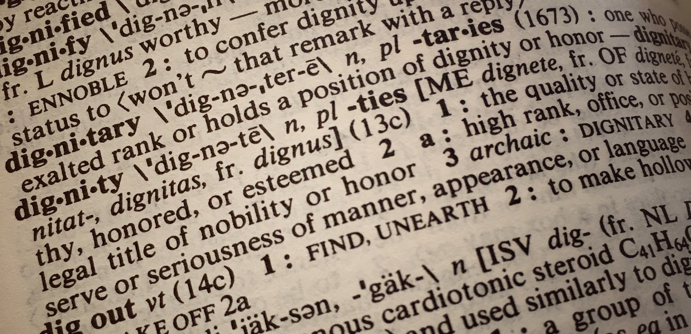

Datenannotation

Die Annotation ist einer der wichtigsten Arbeitsschritte beim Umgang mit sprachlichen Daten, insbesondere bei der Arbeit mit Korpusdaten. Aber auch z.B. experimentell oder über Fragebogenstudien erhobene Daten müssen oft mit zusätzlichen Informationen angereichert, also annotiert werden.
Bei der Arbeit mit Korpusdaten kommt es nicht selten vor, dass man nach der Nadel im Heuhaufen sucht: In einer großen Menge von Korpusdaten verstecken sich interessante Phänomene, die leicht zu übersehen und schwer zu finden sein können. Bei der Suche kann es deshalb helfen, den Heuhaufen (also: die Korpusdaten, mit denen Sie arbeiten) zu annotieren, um so die Nadel (das für Sie interessante sprachliche Phänomen) finden zu können.

Und vielleicht finden Sie ganz nebenbei noch ein paar weitere Nadeln (Phänomene), von denen Sie vorher gar nichts wussten. Die Datenannotation steht deshalb in enger Beziehung zur linguistischen Analyse.
Was ist Annotation?

Wenn Sie das Wort Annotation oder annotieren noch nie gehört haben, erfahren Sie im Folgenden, was darunter zu verstehen ist und wie sich der Prozess der Annotation von anderen Möglichkeiten, Daten anzureichern, unterscheidet.
Definition
Was genau versteht man unter der Annotation sprachlicher Daten? Versuchen wir es mit einer Definition:
Annotation ist die Anreicherung sprachlicher Daten, insbesondere Korpusdaten, mit linguistischen Informationen.
Ein einfaches Beispiel: Stellen Sie sich vor, Sie möchten die Überschriften von Artikeln der Online-Ausgaben deutscher Tageszeitungen untersuchen.
Wenn Sie jetzt beispielsweise herausfinden möchten, ob bei Zeitung A Nomen oder Verben häufiger in den Überschriften vorkommen und wie diese Verhältnisse bei Zeitung B oder C aussehen, müssen Sie die Möglichkeit haben, die Überschriften auf diese Wortarten hin auszuwerten. Die Überschriften selbst aber verraten Ihnen noch nichts, denn die Wörter tragen die Informationen, welcher Wortart sie angehören, ja nicht mit sich. Wenn Sie die Überschriften auf Wortarten untersuchen möchten, müssen Sie jedem einzelnen Wort zunächst seine Wortart zuordnen und diese Ergebnisse in irgendeiner Form dokumentieren.
Und noch etwas: Wenn Sie eine Zeitung lesen, sind Überschriften visuell sehr einfach zu erkennen. Wenn Sie mit einem bestehenden Korpus wie beispielsweise dem Deutschen Referenzkorpus oder den DWDS-Korpora arbeiten, fällt diese visuelle Markierung weg. Damit Sie überhaupt nach Nomen und Verben in Überschriften suchen können, müssen auch die Überschriften als solche gekennzeichnet werden. Sie müssen den einzelnen Teilen eines Artikeltextes also zunächst die Information zuweisen, ob es sich dabei um die Überschrift, die Leadzeile (die kurze Zusammenfassung unter der Überschrift), den Haupttext oder gar die Datumsangabe handelt.
Diesen Prozess der Zuweisung von Informationen zu sprachlichen Daten nennt man Annotieren. Erst wenn dieser Prozess abgeschlossen ist können Sie Ihre Forschungsfrage beantworten, indem Sie die Häufigkeiten der einzelnen Wortarten in den Überschriften auswerten.
Annotation vs. Metadaten
Wie Sie vielleicht an der obigen Definition erkennen, handelt es sich nicht bei jeder Anreicherung sprachlicher Daten um Annotation im engeren Sinne. Die Betonung liegt nämlich auf der Anreichung durch linguistische Informationen. Informationen, die nicht linguistischer Natur sind, sind für die sprachwissenschaftliche Arbeit aber ebenso unverzichtbar. Dazu gehören vor allem Metadaten. Annotationen beziehen sich üblicherweise auf Wörter und Sätze, seltener auch auf satzübergreifende sprachliche Phänomene. Metadaten hingegen beziehen sich meist auf ganze Texte, Textverbünde oder ganze Korpora.
Zu den Metadaten, die sich auf ein ganzes Korpus oder Teilkorpus beziehen, gehören Angaben wie:
- der Zweck des Korpus (z.B. die Untersuchung bestimmter Dialekte oder der gesprochenen Sprache);
- die Zusammensetzung des Korpus (aus welchen Texten oder sprachlichen Aufzeichnungen des Korpus besteht, z.B. ausschließlich Zeitungstexte oder auch Internetquellen oder sogar Chatverläufe);
- die durch das Korpus abgedeckten Einzelsprachen oder Sprachausschnitte (also z.B. Deutsch oder Englisch, aber auch Dialekte wie Alemannisch oder Berlinerisch);
- die Nutzungsrechte der im Korpus enthaltenen Texte (z.B. ob ganze Texte oder nur Ausschnitte abgerufen werden dürfen);
- bibliographische Angaben, z.B. darüber, wie das Korpus in einer linguistischen Arbeit zitiert werden soll.
Wenn wir die Metadaten einzelner Texte betrachten, kommen natürlich noch einige Informationen hinzu:
- das Entstehungsdatum oder der Entstehungszeitraum des Textes (also z.B. das Datum der Veröffentlichung eines Zeitungsartikels oder das Veröffentlichungsjahr eines Romans;
- das Thema des Textes und/oder seine Textsorte (z.B. Zeitungsartikel, Belletristik, wissenschaftliche Literatur; Angaben zur Länge des Textes (z.B. Anzahl der Wörter und Sätze).
Darüber hinaus lassen sich auch noch Informationen hinzufügen, die bereits unterhalb der Ebene eines Textes liegen, so etwa seine Struktur in Teiltexten (bei Zeitungsartikeln z.B. Dachzeile, Überschrift, Leadtext, Absätze), aber auch die Segmentierung nach Seiten, Kapiteln, Abschnitten, Sätzen und Wörtern. Damit sind wir schon an der Grenze zu Annotationen im engeren Sinne angekommen, also linguistischen Informationen.
Annotierte Korpora vs. eigene Annotationen
Wenn wir mit annotierten, also um linguistische Informationen angereicherten Daten arbeiten möchten, haben wir grundsätzlich zwei Möglichkeiten, dies zu tun, je nachdem, ob wir auf den Annotationen anderer beruhen oder selbst Annotationen durchführen. Deswegen müssen wir unterscheiden zwischen:
- annotierten Korpora (oder anderen Ressourcen) und
- eigenen Annotationen
Wenn Sie ein bereits bestehendes öffentliches Korpus benutzen, wird es in der Regel schon über Annotationen verfügen. Gängig ist insbesondere die Annotation der Wortarten und der Lemmata (also der Grundformen von Wörtern, z.B. sein für bin, ist, sind etc.). Das ermöglicht es Ihnen beispielsweise, gezielt nach Wörtern zu suchen, die zu einer bestimmten Wortart gehören (z.B. nach Substantiven). In diesen Fällen können Sie davon profitieren, dass jemand anders die Annotationsarbeit schon für Sie gemacht hat. Um bestehende Annotationen zu verstehen und richtig damit umgehen zu können, ist es jedoch sinnvoll, auch eigene Annotationeerfahrungen zu sammeln. Deshalb werden wir uns in diesem Tutorial auf die eigene Annotation konzentrieren.
Wenn Sie sich für die Hintergründe annotierter Korpora interessieren, sei Ihnen ein Blick in einschlägige Fachliteratur empfohlen, z.B. das Kapitel 4 von Lemnitzer/Zinsmeister (2015).
Hauptseite Weiter